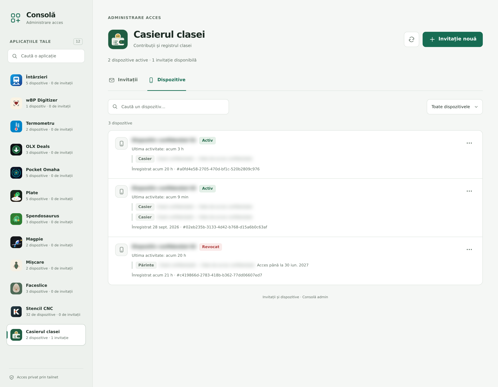
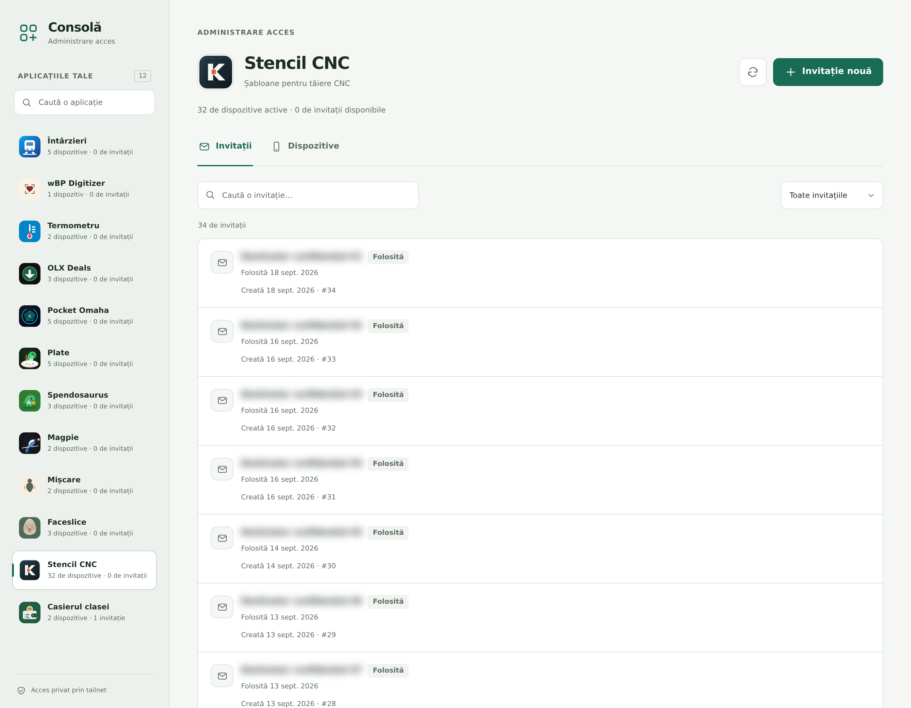
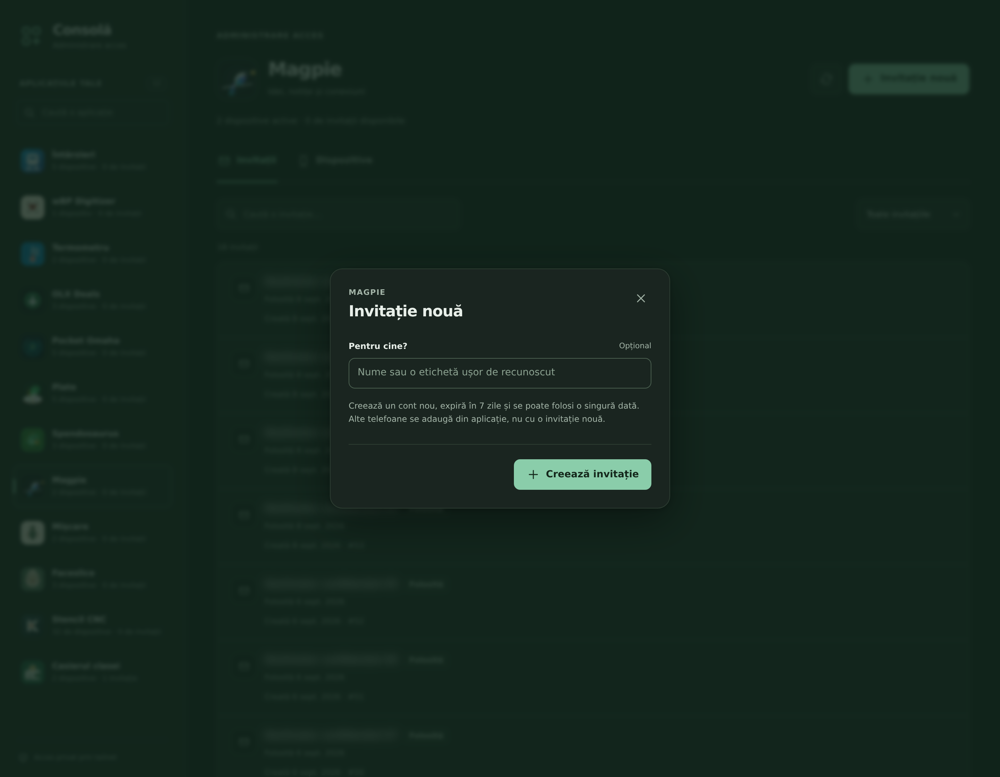
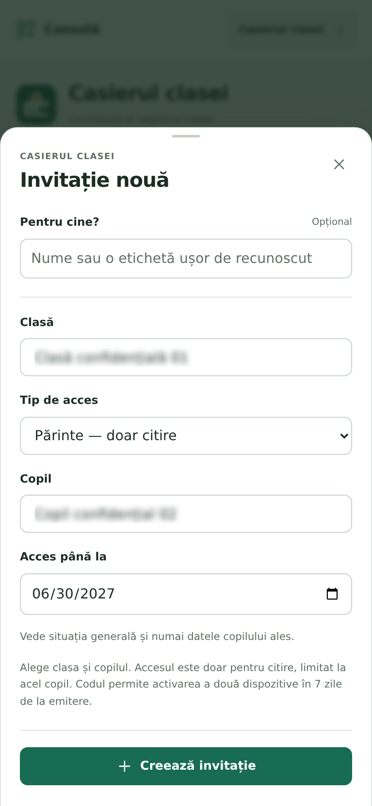

O singură interfață pentru invitații și dispozitive în 12 aplicații PWA. Capturi reale ale consolei, cu datele personale și codurile de acces anonimizate și estompate.

Navigare între aplicații și permisiuni pentru dispozitive.

Stări, filtre și acțiuni pentru invitații.
Clasă, rol, copil și expirarea accesului în Casierul clasei.

Formular simplu pentru aplicațiile cu invitații pentru conturi.
Lista de dispozitive adaptată pentru telefon.
Aplicațiile publice, cu pictograme și căutare, în selectorul mobil.

Opțiunile pentru părinte într-un formular adaptat telefonului.